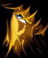

Forums galactiques > Taverne galactique : lieu de discussion informel > Aux trois déesses.
Pages : 1 2
| Urrados Réputation à la taverne : 33  12/05 ETU 16:21 | Score : 4 Détails Les trois déesses, Wyn, Wyrd et Werdandy, vous souhaitent la bienvenue dans leur taverne.
Werdandy:Bonjour à tous, en lisant notre petite descriptions, vous apprendrez que nous sommes chargées de la destiné, aussi, nous avons décidé, mes soeurs et moi-même, de mettre à profit ce don à toutes les personnes qui désirent en savoir plus sur leur avenir. Nous attendons vos questions, nous tirerons les runes pour vous et tacherons d'interprêter le message qu'elles font passer. | ||
| Akiro Réputation à la taverne : 22  12/05 ETU 18:14 | Score : 2 Détails "De la divination ?"
Akiro poussa les portes de la récente taverne, un sourir un peu moqueur aux lèvres. Le jeune manieur de sabre n'avait jamais réellement cru aux résultats de telles activitées. Mais comme toujours, sa curiosité dominait tout le reste. Et puis, apres tout pourquoi pas : il n'avait rien à perdre ! La vision des trois ravissantes femmes qui se tenaient à l'autre bout de la pièce ne fit que consolider cette idée. "Bonsoir, charmantes demoiselles" Déjà les trois déesses s'empressaient de l'installer confortablement pour la séance, le questionnant sur ce qu'il désirait savoir. Son regard se fit malicieux : "Je suis venu ici car je me demande souvent quelle sera la plus grande réussite de ma vie future... ou ma plus grande défaite ! Vous comprenez certainement que je préfère tout de même héviter la seconde, de peur des conséquences. Mais pour ce qui est de la première chose, la plus grande réussite, je serais ravi si vous pouviez m'éclairer grâce à votre savoir-faire dont je ne doute pas l'efficacité !" Akiro les regardait en silence, attendant leur réaction | ||
| Urrados Réputation à la taverne : 33 12/05 ETU 18:56 | Score : 2 Détails Werdandy:Bonjour bel étalon, détendez-vous, faites comme chez vous.
Wyn met sa tête dans ses mains: On aura tout vu! Wyrd:Bienvenue, laissez-nous tirer les runes, nous allons voir ce que vous réserve l'avenir. Elle prirent chacune une poignée de runes et les jettèrent devant elles. Seules trois runes restèrent face visible. Chacune des trois soeurs prirent une rune et se retournèrent, elles chuchotèrent pendant quelques minutes puis firent de nouveau face au dit bel étalon. Bien, en étudiant les runes, nous pouvons vous dire que votre avenir sera semé d'embûches, cependant... Wyn:Vous allez gagner beaucoup de sous, une somme incomptable. Les trois soeurs se regardèrent puis regardèrent Akiro. Werdandy:Il est à moi! Wyn:Je suis pas d'accord, c'est moi qu'il veut! Les trois soeurs commencèrent à se battrent, les runes volèrent dans tous les sens, la table vola vers Werdandy, qui la renvoya vers Wyrd, elle la prit en pleine tête, la taverne, si calme il y quelques minutes, s'était transformée en un vrai champ de bataille, le chaos prit le dessus sur le silence absolu. Dehors, un passant qui voulait rentrer dans la taverne, se ravisa quand une chaise failli lui atterrire en pleine tête. | ||
| ash Réputation à la taverne : 165  19/05 ETU 13:33 | Score : 0 Détails ash gara son vaisseau devant la porte, il scruta le bâtiment dans ses moindres recoins. Son regard s'arrêta sur les vitres sales. Il sortit alors son petit carnet rouge et écrivit quelque chose. ash entra dans la taverne, personne ! Pas un chat, le patron somnolait derrière son comptoir une bouteille de Hold Scotch à la main.
Les tables étaient vides, seule quelques boules de cristal démarquaient certaines. Des papiers jonchaient le sol. ash sortit à nouveau son carnet et nota puis le rangea. Il alla vers le comptoir et réveilla d'un coup de flotte le dormeur. -Bonjour commandant, je vais prendre une limonade. -Bien. Fit le patron. Eh il bu sa limonade tranquille dans le bâtiment vide, ou un silence de mort régnait. | ||
| Urrados Réputation à la taverne : 33 19/05 ETU 13:59 | Score : 3 Détails Wyrd arriva en trombe dans la taverne, elle scruta la salle du regard et trouva ce qu'elle cherchait.
Wyrd:Commandant Ash, quelle joie de vous voir ici! Puis-je savoir la raison de votre venue inopinée, elle se tourna vers le gardien, Nestor, dehors! Le dit Nestor se leva et partit de la Taverne. Wyrd:voulez-vous que je tire les runes pour vous? | ||
| ash Réputation à la taverne : 165 19/05 ETU 14:11 | Score : 0 Détails Diantre ! Un magicien. Mais faite donc chère amie !
Tirez les runes. | ||
| Urrados Réputation à la taverne : 33 19/05 ETU 15:52 | Score : 3 Détails Wyrd dévisagea le fameux Ash et s'apperçut de quelque chose qui l'énerva étrangement.
Espèce d'imposteur, vous croyez pouvoir réussir en usurpant l'identité d'un autre? Dommage ça ne marche pas avec moi, j'aurais bien tirer les runes, mais certainement pas pour vous! Sortez d'ici et que je ne vous revois plus! | ||
| Barakkuda Réputation à la taverne : 19  29/05 ETU 18:02 | Score : 0 Détails Le phyte ayant quelque problème à digérer ce ragoût de tychlak aux baies Zerba, il décida d'entrer "aux trois déesses" afin de s'humecter le gosier ... Avec un peu de chance y'aura un pestacle ce soir, grogna-il de sa voix rocailleuse.
Il appuya sur la pédale du ptélomobile qui lui permettait d'évoluer en milieu non-aqueux. Depuis quelques temps son apparence ne changeait plus guère, son humeur était morose ... Il se sentait quand même un peu seul. Peu de personnes le cotoyait depuis que son visage et son corps s'étaient mû ainsi. Barakkuda lissa ses dents de devant avec sa langue, essuyant une dernière tache d'hémoglobine ... -B'soir ... | ||
| Urrados Réputation à la taverne : 33 30/05 ETU 16:37 | Score : 0 Détails Werdandy s'aperçut qu'un nouveau commandant était entré, elle se dirigea à sa table et eut un léger sursaut lorsqu'elle vit son visage, elle s'assit à côté de lui, et lui prit ce qui ressemblait vaguement à une main.
Werdandy:Monsieur? Vous désirez queqlue chose, une boisson, du réconfort? Vous voulez peut-être que l'on vous tire les runes? Excusez-moi, je ne me suis pas présentée, je suis Werdandy, déesse de l'amour et de la beauté, l'une des trois déesses détentrice du destin du monde. Vous n'avez pas l'air en forme, vous n'êtes pas le premier hybride que je croise, je sais à quel point c'est dûr, mais je ne suis pas comme ces barbares que l'on ose appeler hommes, et je peux vous assurer que ce n'est nullement un handicape. Elle lui baisa le front se releva et s'en fut vers le bar. | ||
| Barakkuda Réputation à la taverne : 19 30/05 ETU 16:54 | Score : 0 Détails Le guerrier phyte restait là, gueule ouverte, yeux écarquillés ... Cette Werdandy était d'une telle beauté. Il se remémorait ses paroles encore, et encore, les buvant comme du coulis de schmorpch, un régal. En face d'une escadre d'hyper-croiseurs sauriens, il ne sentait pas son coeur battre différemment que lorsqu'il était écoutait le Journal Holovisionné. Mais lorsqu'une douce créature lui prêtait attention et lui adressait d'agréables et réconfortantes paroles, ses émotions chaviraient ...
Barakkuda referma ses machoîres, produisant un petit claquement sec dans l'ambiance feutrée de la taverne. Il chassa une larme d'un mouvement presque convulsif de la tête. La goutte alla s'écraser contre le mur à ses cotés. Il souhaitait faire à son tour un geste envers la déesse, mais qu'est-ce qui pouvait donc lui faire plaisir d'une manière ou d'une autre? L'hybride la regarda un moment ... | ||
| Urrados Réputation à la taverne : 33 30/05 ETU 18:19 | Score : 0 Détails Werdandy sentait le regard du commandant se poser sur elle, c'est à ce moment qu'elle se rendit compte qu'elle avait oublié de lui demander son prénom, elle courut vers le bar, prit une bouteille de bière et retourna vers l'hybride. Là, elle s'assit décapsula la bouteille et la poussa vers l'hybride. Elle fouilla dans ses poches et trouva un paille, elle la plongea dans la bière fraîche et regarda l'hybride.
Werdandy:Je suis bête, je me suis rendue compte que je ne connaissait pas votre nom, quel est-il?Elle regarda le mur à côté de l'hybride et sortit un fiole de sa poche. Votre larme n'a pas sa place sur le mur, c'est dans cette fiole qu'elle devrait être, les larmes sont les plus belles choses qu'une personne puisse offrir à une autre personne. Elle fit venir la larme vers elle, puis la fit tomber dans la fiole... | ||
| Barakkuda Réputation à la taverne : 19 01/06 ETU 01:10 | Score : 0 Détails - Mon nom est Kuda et je me prénomme Barak, affirma le commandant regardant au sol. Je suis un phyte. Mon apparence est liée à mon humeur ou mes émotions. Mais j'ai vécu tant d'horreur en l'Univers que mon corps est inchangé depuis des années, bloqué sur ce masque de bête sanguinaire.
Malgré ses yeux vitreux, Barakkuda transmettait beaucoup de ses sentiments à travers son regard. Il finit par secouer la tête. - Mais je ne veux pas vous importuner avec ceci, fit-il. Votre proximité m'impressionne. Il se dégage de vous une aura d'énergie extraordinaire. Je n'oublierai jamais vos paroles. Il me faut partir, car mon Empire m'attend. Si je survis, j'aimerai que vous me lisiez les runes ... Il se tut, mais ses yeux restaient fixés dans ceux de Werdandy. Il constata que ceux-ci constituaient deux univers à part entiers et souhaita, l'espace d'un instant, s'y plonger, s'immerger totalement dans cet océan de velours. De son bras-nageoire maladroit il effleura la main de la déesse, puis actionna son engin pour quitter le bar. Juste avant de disparaître, il se retourna et souffla: - aurevoir, Déesse! | ||
| Urrados Réputation à la taverne : 33 01/06 ETU 19:39 | Score : 0 Détails Werdandy n'eut pas le temps de répondre au commandant Kuda, mais elle se dit, en espérant être entendue par Barak:
Les horreurs sont des souvenirs que l'on peut vite oublier, peu importe ce qu'il en coûte, je peux vous assurer que je vous ferais redevenir un homme Elle sentit une larme couler le long de sa joue, elle l'essuya du bout des doigts et la fit glisser dans la fiole, lorsque les deux larmes entrèrent en contact, un lumière apparut et des volutes se formèrent. La destiné avait frappé... | ||
| Barakkuda Réputation à la taverne : 19 15/06 ETU 01:05 | Score : 0 Détails La porte s'ouvrit en claquant. Barak kuda, le fier phyte, revenait de Khadûl, une de ses planètes préfèrées.
- salut Beauté, fit-il à Werdandy lorsqu'il l'aperçut. Bien que ses écailles se soient transformées en une peau lisse, et que la couleur de celle-ci se soit éloignée du gris foncé, son apparence n'était pas encore vraiment améliorée. - Je ne sais pas ce qu'il s'est passé après mon départ, mais je me suis senti comme porté par une énergie puissante. Ma bataille contre Zoé le fourbe n'est pas terminée, car il s'est enfui dans les méandres des vacances, mais j'ai pu prendre le dessus. Je pense que tu n'y est pas vraiment étrangère. Regardes, dit-il à la déesse, agitant doucement deux mains palmées. Je commence à me passer du porteur ionique pour activer mon poste de pilotage. Cela fait des jours que je vole, que me proposes-tu de boire? Barak s'installa confortablement dans le divan du fond de la taverne, il soupira profondément, comme pour marquer son plaisir d'être là, ses yeux étaient emplis de vie ... | ||
| Saiyen Réputation à la taverne : 105  15/06 ETU 09:36  | Score : 0 Détails Sangoku entra, sans trop savoir ou il méttait les pieds, dans cette taverne. On lui en avait vaguement parlé, apparament le point fort de lieu n'éttait pas les boissons mais plutot les gérants. Enfin les gérantes, qui pouvaient lire l'avenir. Le seigneur des saiyen croyé comme tous son peuple en la lecture de l'avenir dans les astres. C'est donc plein d'impatience qu'il alla voir les 3 soeurs
Bonjour je.. je voudrais connaitre mon avenir. | ||
| Urrados Réputation à la taverne : 33 15/06 ETU 17:33 | Score : 1 Détails Wyn s'approcha du nouveau venu.
Wyn:Bonjour, vous voulez une lecture complète? Laissez-nous le temps de tirer tout ça! Wyrd, Werdandy! On a un client! Les deux autres arrivèrent, Wyrd portait un grand sac elle le déposa sur la table et l'ouvrit. Elle le retourna, renversant son contenu, des plaques de métal, 24 exactement, seules trois laissaient voir ce qu'il y avait écrit dessus, des signes très étranges? Mais non des runesje vous jure... Chacune en pris une dans sa main et regardèrent le commandant. Werdandy:"Not", la Necessité, elle montre que vous possédez ce dont vous avez besoin, peut-être à votre insu, et qu'il vous faut vivre maintenant sur un autre plan puisque celui-ci est sans problèmes majeurs. C'est donc pour vous un temps où une recherche plus spirituelle, plus métaphysique, peut vous emmener au-delàde ce qui conçoit la conscience ordinaire par trop de terre à terre. La seconde rune vous dira dans quel sens s'oriente la vie de votre esprit et votre intelligence, et partant de votre capacité à comprendre le monde et les motivations des autres, tandis que la troisième vous indiquera ce qu'il sera possible de créer à partir de cette nouvelle étape. Wyn:"Ger"la Terre, elle vous place au centre de la Terre, image symbolique signifiant que le moment est venu de laisser les transformations se faire à l'intérieur de vous-même, mais peut-être aussi dans votre milieu professionnel et social. Dans la pratique, vous êtes comme le dessin de cette rune: traversé ou tributaire des mouvements qui régénèrent la société. Vous pouvez en être un des éléments positifs et, dans ce cas vous trouverez aisément votre place, car tirée au centre, "Ger", signifie à la fois le réceptacle et le principe de naissance. La vie ne s'arrête jamais, et ses rythmes n'obéissent pas à la volonté égoïste des hommes. En ce sens, la douzième rune est, à l'insu de tous, à la base de toute notion réellement écologique. Wyrd:"Is", la Volonté, elle annonce que la prochaine étape, le prochain trabail, consiste à réaliser l'harmonie du chaud et du froid, les élans du coeur et ceux de la raison. La sagesse conseille donc de s'y préparer dès maintenant et d'envisager( en accord avec les deux runes précedentes) quels seront les points où le travail d'harmonisation sera le plus nécessaire et le plus profitable. Je vous remercie de nous avoir écoutées. Vous pouvez toujours commander une boisson et restez le temps de cogiter sur ces nouvelles. Werdandy s'en fut vers Barak, et lui tendit un verre de bière, ses yeux brillaient, il était revenu et il était heureux. Werdandy:Vous êtes enfin de retour, vous m'avez tellement manquée, j'ai oublié de vous dire une chose la dernière fois qu'on s'est vu, je... je voulais vous dire que... je vous aime. | ||
| Urrados Réputation à la taverne : 33 25/06 ETU 19:27 | Score : 0 Détails Moi, Wyn, suis heureuse de vous annoncer que la taverne des trois déesses offre une consultation à tout le monde, à condition de consommer au moins une boisson. Venez nombreux, nous serons heureuses de tirer les runes pour vous.
Toutes les boissons sont à moitié prix! | ||
| worf359 Réputation à la taverne : -9  26/06 ETU 12:30 | Score : 0 Détails Worf359 penetra dans la taverne et fut tout de suite eblouis par la beauter des trois deesses, oui c'etaient bien des deesses.
Il s'assis au bar et commandas une bouteille de sanguine et attendis que l'une des visions de reve de cet endroit ne vienne le voir | ||
| Urrados Réputation à la taverne : 33 02/07 ETU 19:11 | Score : 0 Détails Wyn s'approcha du nouveau venu, la sanguine à la main et se pencha vers lui, laissant apparître son beau décolté.
Tenez bel étalon. Wyrd, Werdandy, on a un client! Les deux autres s'approchèrent et tirèrent les runes. "Kan", le feu, l'aptitude, elle montre que vous possédez l'enseignement, que vous avez été initié traditionellement par des Maîtres, ou Prêtres, ou simplement instruits par des êtres plus expérimentés que vous. Vous connaissez des réalités qui échappent au commun des mortels, uniquement préoccupés de la surface des choses. C'est un très grand privilège. La seconde rune dira ce que vous devez faire de la Connaissance reçue, tandis que le troisième vous indiquera le but définitif de cet enseignement. "Eolh", la protection, elle invite à la plus grane prudence car elle vous montre avançant sur une route entouré, puis menacé, par un monde ne partageant pas votre démarche ou qui, même bien intentionné, ne le comprend pas réellement. Chacun va tenter de vous ramener dans e chemin routinier que suit le grande foule. C'est là l'objet de l'avertissement de cette rune. Il ne faut pas que vous vous laissiez séduire par la facilité de la voie "comme tout le monde", par l'argent immédiat facile, ou par les promesses alléchantes, mais mensongères, dictées uniquement par le profit ou la jalousie. Ce serait la fin de sa liberté matérielle et, plus grave bien qu'invisible, le terme de son développement spirituelle. "Beorc", la Mère Nature, la Naissance, la Créativité, elle vous propose une nouvelle approche de la vie, une plus grande conscience de ce qui constitue le monde. Ce sera l'expérience prochaine, celle qui enrichira aussi bien votre intelligence que votre vie matérielle. Wyrd et Werdandy se retirèrent, laissant le commandant seul avec Wyn. Vous voulez une autre sanguine beau gosse, je crois qu'elle ne suffira pas pour deux. | ||
| Barakkuda Réputation à la taverne : 19 16/07 ETU 19:43 | Score : 2 Détails Barak était assis, là. Sa position était exactement la même depuis plusieurs semaines déjà. Son expression aussi. Le choc émotionnel avait provoqué une phéno-paralysie. Son mental continuait à fonctionner. Grâce à ses sensopathes intégré à la base de son, il continuait à administrer son empire, mais il était incapable, pour l'heure, de réagir physiquement.
Il savait que lorsque son trauma disparaitrait, son apparence changerait d'un coup et il recouvrirait ses aptitudes. La seule inconnue dans tout cela était quand? Cela pouvait être demain, dans un mois, dans un an. Il concentra toute son attention et chercha a entrer en contact avec l'esprit de Werdandy. Il sentait ses sensopathes chauffer sur sa peau. C'était une nouvelle expérience pour lui, que de tenter de communiquer par l'Autre Voix. Il savait que certains moines phytes en étaient capables ... mais qu'en était-il des Déesses? ... |
Pages : 1 2
Forums galactiques > Taverne galactique : lieu de discussion informel > Aux trois déesses.